Fauna & estuario
Especies del entorno, identificación visual y datos breves para acompañar la visita.
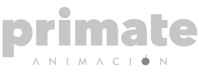
LEDDos tótems LED exterior para Balcón al Mar y Paseo Portuario, con contenidos dinámicos, información útil y comunicación portuaria.
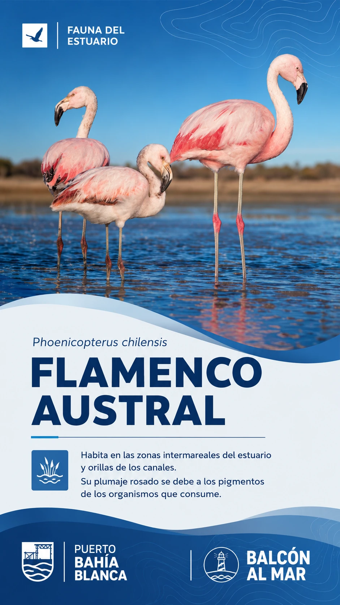
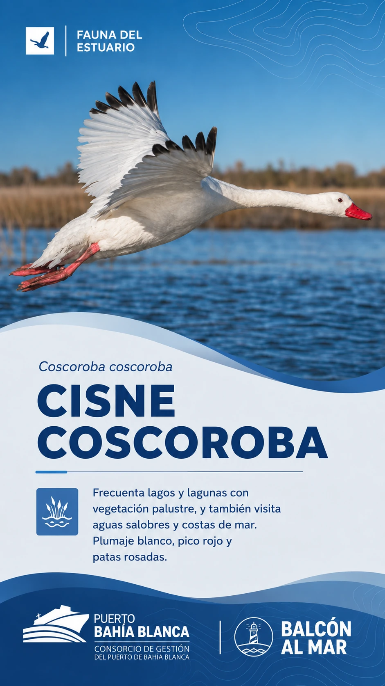
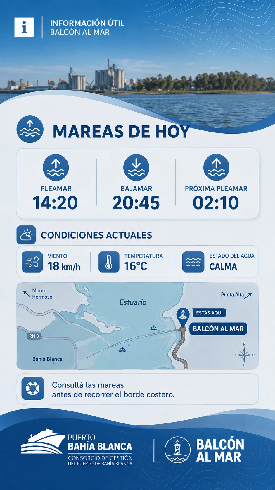
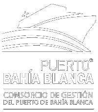
Balcón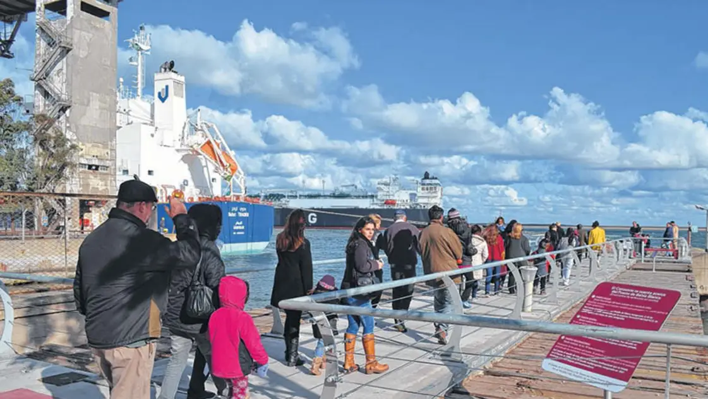
Ubicado en el ex Muelle de Hierro, entre las plantas de Cargill y Terminal Bahía Blanca, el Balcón al Mar facilita el contacto y el acercamiento de los vecinos con la realidad operativa y el paisaje portuario.
Es un punto de encuentro con el estuario y, al mismo tiempo, una ventana directa a la actividad de una estación marítima emblemática para la historia de la ciudad.
El formato vertical permite alternar piezas visuales pensadas para una lectura rápida en exterior y actualizar ambos puntos de forma remota.
Especies del entorno, identificación visual y datos breves para acompañar la visita.
Información útil del día, referencia geográfica y lectura simple del entorno costero.
Campañas, novedades, actividades e información institucional del Puerto de Bahía Blanca.
Visualizaciones de la ubicación propuesta junto al paseo, manteniendo escala, perspectiva y lectura del paisaje.
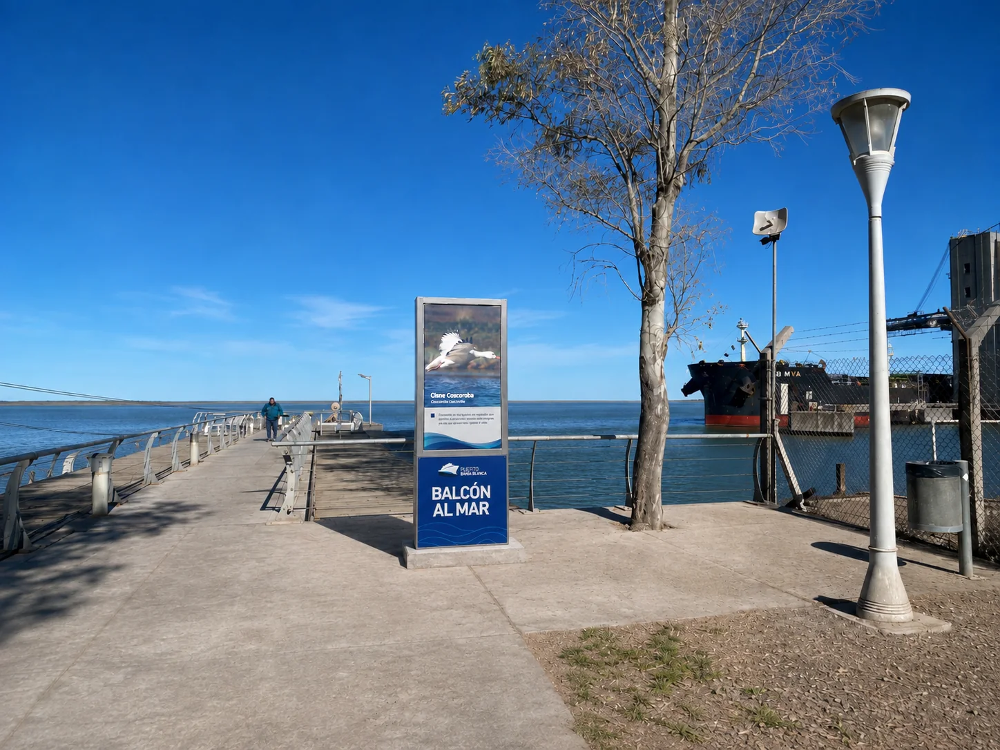
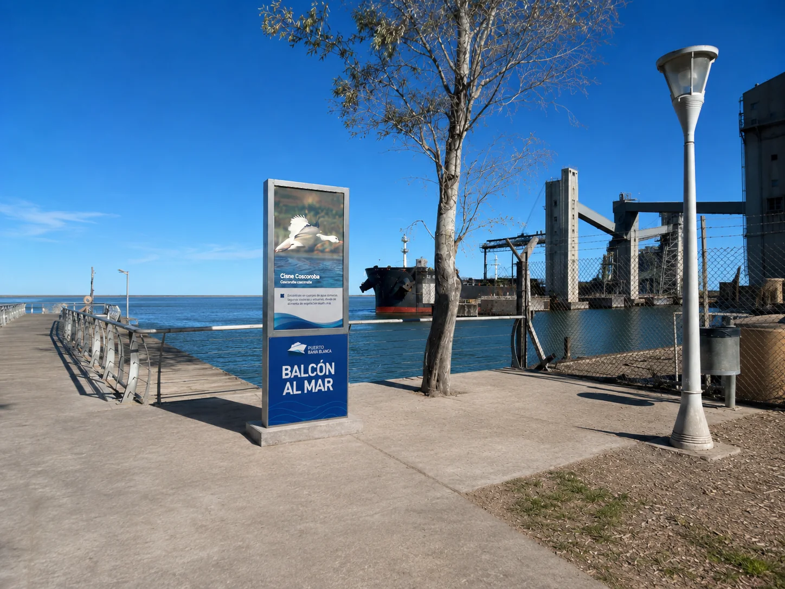
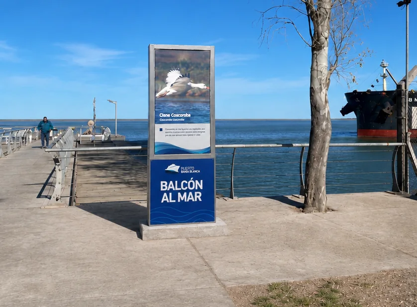
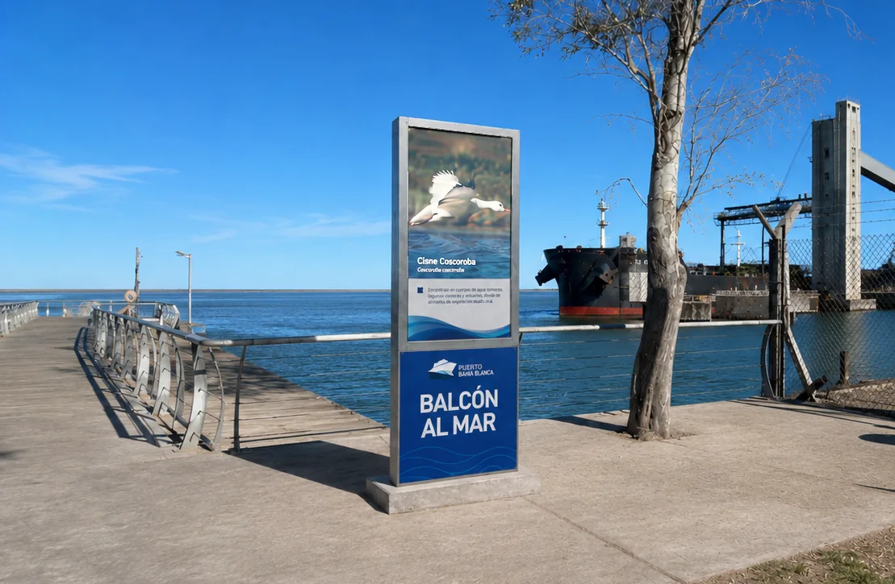
Las piezas pueden rotar automáticamente y actualizarse según el momento del día, la temporada o una necesidad puntual de comunicación.
Contenido visual de alto impacto, nombre de la especie y datos breves de interpretación.
Una segunda pieza de la misma familia gráfica para construir una secuencia de contenidos.
Datos prácticos, estado del entorno y ubicación, presentados con lectura rápida en formato vertical.
Ambas unidades se administran online para cambiar piezas, programar horarios y mantener vigente la información sin intervenir físicamente los equipos.
Estructura de acero inoxidable de 2 metros de altura, diseñada para exterior y pensada para funcionar como soporte permanente de información digital en el paseo.
Configuración propuesta: pantalla LED en el sector superior y placa rígida institucional en la parte inferior, con identidad de Balcón al Mar.
Como referencia constructiva y de escala, se toma la instalación real de un tótem LED exterior en la plaza principal de Punta Alta.
La propuesta para Balcón al Mar conserva la lógica de estructura robusta y pantalla vertical, adaptando completamente la gráfica inferior y los contenidos a la identidad del Puerto de Bahía Blanca.
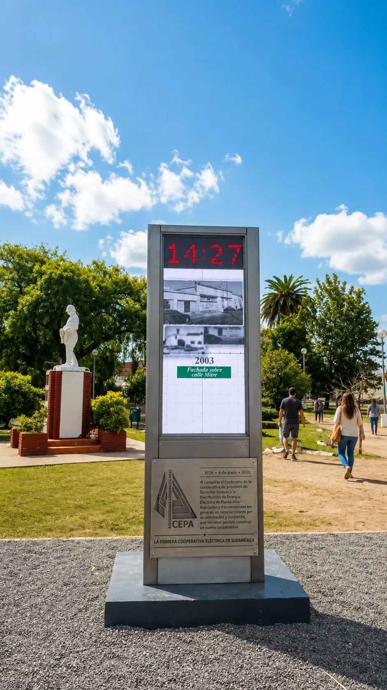
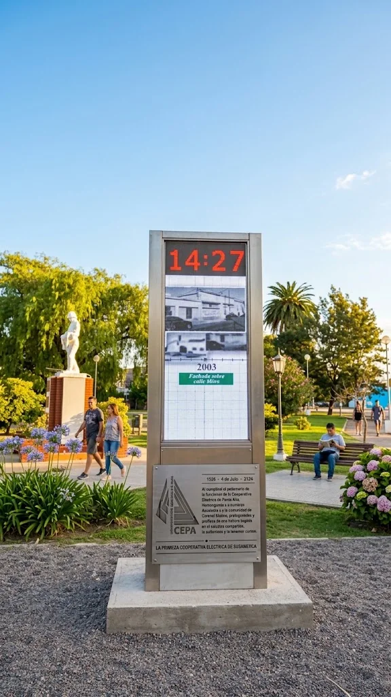
La propuesta se amplía con una segunda unidad exterior en otro espacio público del Puerto de Bahía Blanca.
El Paseo Portuario forma parte del programa Ciudad Puerto y funciona como un espacio recreativo y educativo que vincula el Balcón al Mar con la plazoleta portuaria.
Sus zonas de descanso, iluminación, mobiliario y cartelería exterior lo convierten en un lugar natural para sumar información digital y comunicación institucional.
La ubicación definitiva se define luego del relevamiento técnico y de circulación del sector.
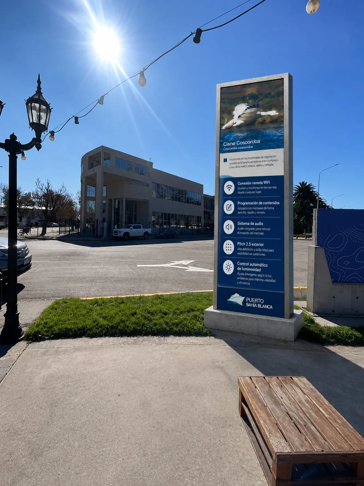
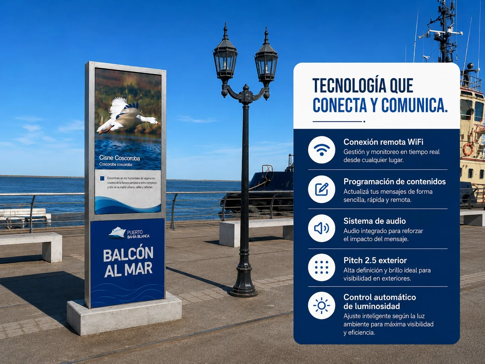
Balcón al Mar y Paseo Portuario pueden funcionar como una pequeña red de comunicación exterior: contenidos visuales, datos útiles e información institucional gestionados desde un mismo sistema.
Tecnología visual · Bahía Blanca